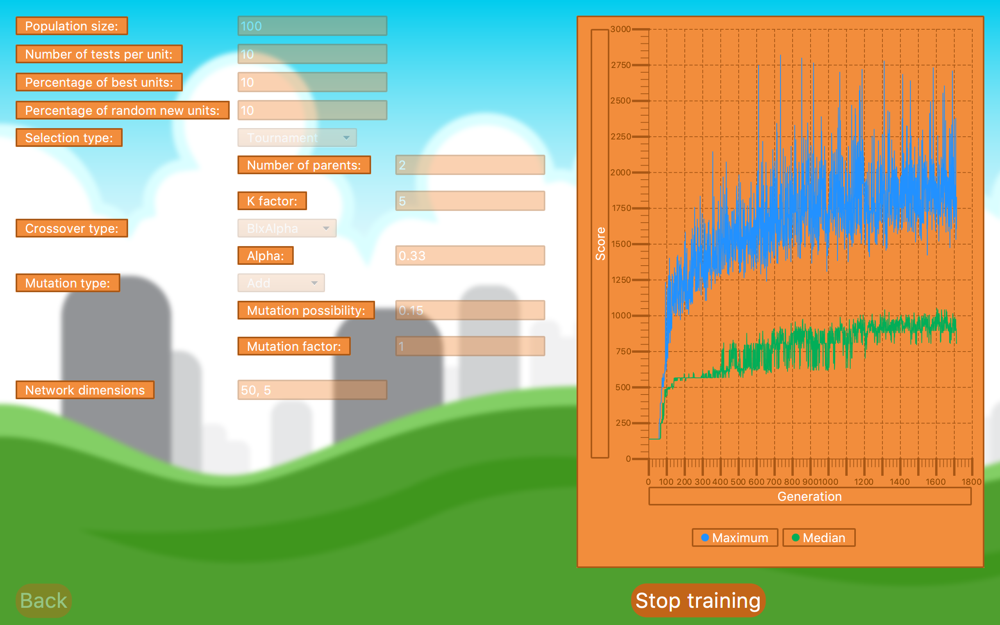

Jetpack FER ride
Projekt iz programske potpore
Jetpack FER ride je projekt izrađen u sklopu predmeta Projekt iz programske potpore (akademska godina 2018./2019.) u 5. semestru preddiplomskog studija računarske znanosti na Fakultetu elektrotehnike i računarstva Sveučilišta u Zagrebu pod mentorstvom doc. dr. sc. Marka Čupića
Opis projekta
Cilj projekta bio je razviti jednostavnu 2D video igru te automatskog igrača koji je može igrati jednako dobro ili bolje od čovjeka.
Projekt smo izradili u 3 faze:
- Razvoj video igre
- Razvoj modela umjetne inteligencije
- Izrada korisničkog sučelja
1. Razvoj video igre
Inspiracija za našu video igru je poznata igra za mobilne uređaje Jetpack Joyride. Cilj igrača je izbjegavati prepreke i skupljati novčiće na koje nailazi. Igra završava kad se igrač zabije u neku od prepreka.
Igra se sastoji od dva dijela: simulatora svijeta i sustava za grafički prikaz stanja svijeta. Ta dva dijela su potpuno odvojena pa je moguće simulirati tijek igre i bez prikazivanja sadržaja na zaslonu.
2. Razvoj modela umjetne inteligencije
Za igru je bilo potrebno razviti automatskog inteligentnog igrača. Za to smo koristili tri različita modela umjetne intelignecije:
Za učenje svih modela korišten je genetski algoritam.
3. Izrada korisničkog sučelja
Na kraju smo izradili korisničko sučelje koje omogućuje lakše korištenje svih funkcionalnosti sustava. Kroz korisničko sučelje omogućeno je učenje modela umjetne inteligencije uz izbor različitih parametara u skladu s izabranim modelom. Korisničko sučelje isto tako omogućuje korisniku praćenje učenje kroz grafički prikaz.
Cijeli projekt je implementiran koristeći programski jezik Java verzije 8, a za izradu grafičkog sučelja korištena je tehnologija JavaFX.
Galerija
Glavni izbornik
Igra
Igra
Izbor parametara učenja

Prikaz učenja
Učitavanje automatskog igrača
Mentor
Doc. dr. sc. Marko Čupić
Članovi tima
- Ivan Mikulić (voditelj)
- Matija Bertović
- Adi Čaušević
- Martin Čekada
- Mate Gašparini
- Antun Magdić